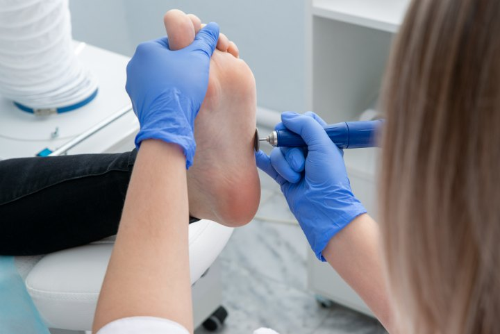

Uñas encarnadas, callosidades, papilomas y verrugas plantares
La mayoría de las molestias del pie tienen una causa concreta y un tratamiento sencillo cuando se aborda a tiempo. En la primera visita realizamos una exploración completa del pie y de la lesión, explicamos qué la ha provocado y, en la mayoría de los casos, la tratamos en esa misma sesión.
Trabajamos con material estéril de un solo uso y técnicas de quiropodia que alivian el dolor desde el primer momento, sin necesidad de reposo ni de interrumpir tu actividad habitual.
Después del tratamiento te damos pautas de cuidado y prevención para que la lesión no vuelva a aparecer, y si el problema es recurrente valoramos su origen mecánico.
Lesiones de la uña y de la piel del pie
Liberamos el borde de la uña que se clava en la piel y tratamos la inflamación. En uñas que se encarnan una y otra vez valoramos la corrección definitiva.
Retiramos el callo o el ojo de gallo que provoca el dolor y buscamos el exceso de presión que lo genera para evitar que vuelva.
Lesiones de origen vírico, frecuentes tras el uso de duchas y piscinas comunes. Las diferenciamos de un callo y aplicamos el tratamiento adecuado hasta su resolución.
Uñas amarillentas o engrosadas y descamación entre los dedos. Tratamiento tópico y, cuando está indicado, láser de diodo.
Desbridamos la grieta, protegemos la zona y pautamos la hidratación necesaria para cerrar la piel y mantenerla flexible.
Corte y fresado de uñas, retirada de durezas y revisión general del pie. El mantenimiento que evita la mayoría de las urgencias.
01
Revisamos la lesión, la piel, las uñas y tu historial para llegar al diagnóstico.
02
Se realiza en la misma sesión, sin dolor y sin necesidad de reposo posterior.
03
Pautas de cuidado, calzado y revisiones para que la molestia no reaparezca.
¿Te duele al caminar? Pide cita y lo vemos hoy mismo.
968 23 19 64